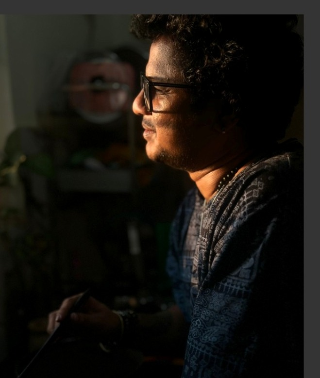

Build teams that grow.
Mentoring, training, employee engagement, career development, and clear communication across teams and stakeholders.
I turn complex operations into clear, controlled, people-first outcomes. With 16+ years in U.S. home lending and 5+ years in leadership, my work sits at the intersection of delivery, governance, risk, and continuous improvement.

I bring structure to high-stakes workflows while keeping the people doing the work in view. My approach combines thoughtful leadership, practical controls, and process improvements that can scale.
Mentoring, training, employee engagement, career development, and clear communication across teams and stakeholders.
Workflow optimisation, change implementation, operational planning, reporting, and automation support.
Risk assessment, audit readiness, compliance, access management, control testing, and escalation resolution.
Cross-functional collaboration, stakeholder briefings, business reviews, process walkthroughs, and change communication.
From frontline financial analysis and compliance to team leadership across mortgage and claims operations.
Lead and support operational delivery across documentation, home preservation, loss mitigation, and fraud/claims work. Delivered new-hire briefings for 150+, Code of Conduct sessions for 350+, and coordinated seating plans for 400+ employees. Led a 20-member documentation team, supported 8 promotions, automated onboarding/offboarding across 50+ teams, and strengthened controls, audit readiness, and leadership reporting.
Researched and built a verified database of U.S. residential contractors, supported onboarding and platform adoption, and coordinated homeowner-contractor interactions including escrow-based payments.
Handled high-priority escalations, audits, claims investigations, compliance monitoring, and corrective actions. Coordinated regional vendors and orders, monitored SLA and quality standards, and supported continuity across property-preservation workflows.
Helped students and parents select online tutoring packages and navigate the online tutoring platform.
A few examples of scale and outcomes from the work documented in my résumé.
Onboarding/offboarding using smart lists and access management.
Virtual training, certifications, access coordination, and quality feedback.
Reported savings from a workflow automation initiative.
A practical mix of leadership, governance, delivery, and technology enablement.
Team mentoring · Career planning · Engagement · Training · Knowledge transfer
Mortgage documentation · SLA/KRI tracking · Inventory planning · Workflow coordination
Audit readiness · Regulatory compliance · RCSA · Control testing · Escalations
Process redesign · Automation support · Change control · Efficiency initiatives
MIS reporting · Business reviews · Dashboards · Process walkthroughs
Tableau · Confluence · SharePoint · Microsoft Lists · Microsoft Teams
Professional designation
Dr. C. V. Raman University · Thalassery, Kerala
For conversations around operations, process improvement, governance, and people leadership, reach out directly.